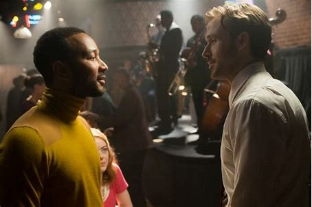

主要内容
故事发生在洛杉矶，寂寥的小演员米娅的志向是女演员兼剧作家，
她沉迷老电影明星。她在华纳兄弟的片场当咖啡师，经常翘班去试镜，
如果真的接到戏，哪怕再小的角色也会让她欣喜若狂。
塞巴斯汀是一名系丝绸领带的爵士钢琴师，对艺术有着近乎洁癖的追求。
他想开间俱乐部，但他所痴迷的音乐更适合博物馆，几乎没有人会愿意花钱去听。
为了生存，他违心加入了一支流行爵士乐队，在尖叫的观众面前摆弄音乐合成器。
同样追求梦想的两人在这座城市里遇见彼此，在唱唱跳跳中坠入了爱河，
相互慰藉扶持，一起追求毕生梦想。
但在逐渐达成梦想的同时，
艺术与商业、梦想与现实之间的朦胧博弈，令两人的情感也面临抉择和考验，
在经历了一系列挫折、分歧后，他们彼此鼓励对方不要放弃梦想。
故意看不见 嘿嘿
主演
瑞恩·高斯林 饰 塞巴斯蒂安
瑞恩·高斯林
艾玛·斯通 饰 米娅
艾玛·斯通
约翰·传奇 饰 基思
约翰·传奇
